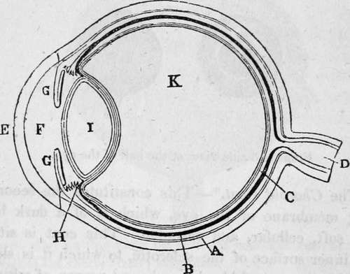
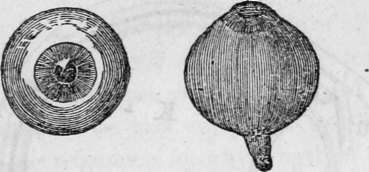
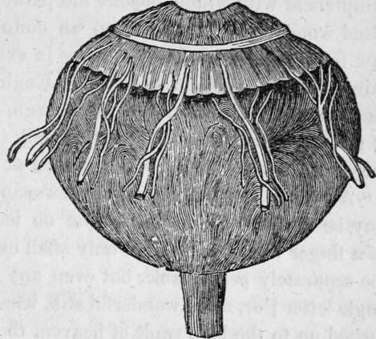

Chapter XVI. The Sense Of Sight
Description
This section is from the book "Human Physiology For The Use Of Elementary Schools", by Charles Alfred Lee. Also available from Amazon: Human Physiology, for the Use of Elementary Schools.
Chapter XVI. The Sense Of Sight
1. This is the most refined and admirable of all our senses. By it especially we hold converse with the external world ; and without it, we should not only be deprived of a large portion of the pleasures we now enjoy, but we should be unable to maintain our existence for any length of time. The wisdom, power, and benevolence of God are chiefly manifested to us through the sense of vision,
2. The eye is the organ of sight, and the most beautiful of all the organs of the senses. So admirable is its structure, so wonderful the provisions which adapt it to the purposes for which it was designed by our Creator, that I shall give as full a description of it as my limits will allow ; and in order to an easy and clear comprehension of its structure and function, I shall first describe the coats of the eye, including the retina, or the expansion of the nerve of vision; then the humours of the eye, by the agency of which, the rays of light are concentrated so as to form an image upon the retina ; and lastly, explain the laws of vision, the motions of the eye, and the means of protection against injury.
3. The Coats Of The Eye
The coats of the eye are generally reckoned as three in number, viz., the sclerotic, the choroid, and the retina; besides these, there are the cornea, the iris, and the ciliary processes, which are viewed and described as appendages to these coats.
4. The sclerotic,* or outer coat, is the firm, opaque, fibrous substance which preserves the globular figure of the eye ; and besides defending its internal delicate structure, serves for the attachment of those muscles which move the eye. It invests the eye on every side except the front, forming about four fifths of the external covering, and extending from the entrance of the optic nerve, at its base, to the cornea. This coat has almost the firmness of leather, and possessing but little sensibility, it is rarely exposed to inflammation or other diseases. The sclerotic coat is much denser in the eyes of fishes than in the eyes of creatures which live on the surface of the earth. In the whale, it is more than an inch thick, in order, that when he dives some hundreds of fathoms deep, the pressure of the water on the eye may not be greater than its structure can withstand. That this pressure is very great, is shown by the common experiment of corking an empty bottle tight, and then letting it down into the sea by a cord ; the cork will always be found forced in, and the bottle full of water ; the pressure being equal to the weight of the column of water above it, of which it is the base. Dr. Buckland states, that in one experiment, a copper cylinder, containing atmospheric air, was crushed flat under a pressure of 300 fathoms, and bottles filled with air were crushed instantly. This shows the necessity of a strong sclerotic coat in animals that dive far beneath the surface.
* From a Greek word, signifying hard.
Fig. 1. Plan of the eye, seen in section.
A, The Sclerotic Coat. F, The Aqueous Humour.
B, The Choroid Coat. G, The Iris.
C, The Retina. H, The Ciliary Processes.
D, The Optic Nerve. I, The Crystalline Lens.
E, The Cornea. K, The Vitreou3 Humour.
Fig. 2. Front and side view of the ball of the eye.
5. The Choroid Coat
This constitutes the second investing membrane of the eye, which is of a dark brown colour, soft, cellular, and vascular. This coat is situated on the inner surface of the sclerotic, to which it is slightly attached by means of blood vessels and nerves, of which indeed it seems to be chiefly composed ; for, on injecting the eye carefully with coloured wax, it assumes a uniform red colour. The inner as well as outer surface of this membrane is covered by the pigmentum nigrum, or black paint; which seems to absorb the rays of light immediately after they have struck the sensible surface of the retina. This pigment, sometimes called tapetum ** in animals that see best at night, is wanting in albinos, as I have already stated ; and it is owing to this cause that the iris and pupil appear of a red colour, and that their vision is so imperfect, that they cannot view objects in a strong light ; and indeed can scarcely see enough to go about in the day time. In animals that prowl by night, this pigment is wanting, or of a bright green, or silvery whiteness, and the dark pigment is peculiar to those animals that see in the brightest light of day.
* Choroides, fleecy, like a lamb skin, ** Tapetum, like cloth, or tapestry.
Fig. 3. The eye, after cutting away the sclerotic coat and cornea, to show the vessels of the choroid coat; magnified.
6. The Retina
This is the third and innermost membrane of the eye, and is the expansion of the optic nerve, and the immediate seat of vision. It is a soft, thin, and transparent substance, extending from the optic nerve to the crystalline lens, and lining the choroid coat throughout without adhering firmly to it. The retina may be divided into three layers, viz., serous, nervous, and vascular ; the former of which passes on over the surface of the lens, and forms part of its capsule. There is a small portion of the retina, supposed to be near where the optic nerve pierces the sclerotic coat, which is not susceptible of vision, as may be shown by an experiment hereafter mentioned. It was formerly supposed, that the retina was endowed with extreme sensibility ; but it is now ascertained that it is almost insensible to every stimulus but that of light. The same is true of the optic nerve. The ordinary sensibility of the eye is derived from the branches of the fifth pair of nerves ; and we have already seen that several pairs of nerves are sent to its muscles.
Continue to:
Tags
humans, anatomy, skeleton, bones, physiology, organs, nerves, brain